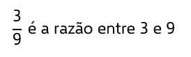

Porcentagem é uma razão entre dois números com base 100. Seu símbolo principal é %.
Podemos representar uma porcentagem ou uma taxa percentual de três maneiras distintas, sem qualquer perda de valor. Por exemplo, dada a porcentagem 10%, podemos realizar sua leitura como 10 porcento, o que equivale a 10 por cem ou à fração 10/100, que, por sua vez, é equivalente a 0,1, pois, dividindo o numerador pelo denominador, encontramos o quociente 0,1.
Em resumo, podemos afirmar que:
Analogamente, temos outros exemplos de porcentagens:
Vejamos a resolução de algumas questões do Enem de anos anteriores para conferir como elas costumam cobrar porcentagem ou taxa percentual.
O Índice de Massa Corporal (IMC) é largamente utilizado há cerca de 200 anos, mas esse cálculo representa muito mais a corpulência que a adiposidade, uma vez que indivíduos musculosos e obesos podem apresentar o mesmo IMC. Uma nova pesquisa aponta o Índice de Adiposidade Corporal (IAC) como uma alternativa mais fidedigna para quantificar a gordura corporal, utilizando a medida do quadril e a altura. A figura mostra como calcular essas medidas, sabendo-se que, em mulheres, a adiposidade normal está entre 19% e 26%.
(Questão com probabilidade no Enem de 2011)
Uma jovem com IMC = 20 kg/m², 100 cm de circunferência dos quadris e 60 kg de massa corpórea resolveu averiguar seu IAC. Para se enquadrar aos níveis de normalidade de gordura corporal, a atitude adequada que essa jovem deve ter diante da nova medida é:
(Use √3 = 1,7 e √1,7 = 1,3)
a) reduzir seu excesso de gordura em cerca de 1%.
b) reduzir seu excesso de gordura em cerca de 27%.
c) manter seus níveis atuais de gordura.
d) aumentar seu nível de gordura em cerca de 1%.
e) aumentar seu nível de gordura em cerca de 27%.
Resolução:
Para calcular o IAC da jovem, precisamos conhecer sua altura (h). Dessa forma, vamos utilizar a fórmula do cálculo do IMC:
Seja x a porcentagem de gordura corporal da jovem, vamos determiná-la através da fórmula do IAC:
O índice de adiposidade da jovem é de 27,25%, mas de acordo com o enunciado, o adequado deve estar entre 19% e 26%. Temos então que:
27,25% – 26% = 1,25%
Isso implica que o IAC da jovem deve diminuir cerca de 1,25% para que se adeque ao indicado. Portanto, a alternativa correta é a letra A.
(ENEM-2011) Para aumentar as vendas no início do ano, uma loja de departamentos remarcou os preços de seus produtos 20% abaixo do preço original. Quando chegam ao caixa, os clientes que possuem o cartão fidelidade da loja têm direito a um desconto adicional de 10% sobre o valor total de suas compras.
Um cliente deseja comprar um produto que custava R$ 50,00 antes da remarcação de preços. Ele não possui o cartão fidelidade da loja.
Caso esse cliente possuísse o cartão fidelidade da loja, a economia adicional que obteria ao efetuar a compra, em reais, seria de..?
a) 15,00.
b) 14,00.
c) 10,00.
d) 5,00.
e) 4,00.
Resolução
Como o cliente não possui o cartão fidelidade da loja, o produto que ele comprará receberá apenas o desconto promocional de 20%. Para descobrir qual será o novo preço do produto que, originalmente, custava R$ 50, utilizaremos uma regra de três:
O produto recebeu um desconto de R$ 10. Se antes ele custava R$ 50, na promoção, custará R$ 40.
Se o cliente possuísse o cartão fidelidade da loja, o preço promocional de R$ 40 receberia ainda um abatimento de 10%. Vamos utilizar uma regra de três novamente para verificar o valor do novo desconto:
*Se o cliente obtivesse o cartão fidelidade, poderia alcançar um novo desconto de R$ 4. Portanto, a alternativa correta é a letra E.
Razões e proporções
Na matemática, a razão estabelece uma comparação entre duas grandezas, sendo o coeficiente entre dois números.
Já a proporção é determinada pela igualdade entre duas razões, ou ainda, quando duas razões possuem o mesmo resultado.
Note que a razão está relacionada com a operação da divisão. Vale lembrar que duas grandezas são proporcionais quando formam uma proporção.
Atenção!
Para você encontrar a razão entre duas grandezas, as unidades de medida terão de ser as mesmas.
Exemplos
A partir das grandezas A e B temos:
Razão:
ou A : B, onde b≠0
Proporção:
, onde todos os coeficientes são ≠0
Ex1.:
Qual a razão entre 40 e 20?
Lembre-se que numa fração, o numerador é o número acima e o denominador, o de baixo.
Se o denominador for igual a 100, temos uma razão do tipo porcentagem, também chamada de razão centesimal.
Além disso, nas razões, o coeficiente que está localizado acima é chamado de antecedente (A), enquanto o de baixo é chamado de consequente (B).
3 . 12 = x
x = 36
Assim, quando temos três valores conhecidos, podemos descobrir o quarto, também chamado de “quarta proporcional”.
Na proporção, os elementos são denominados de termos. A primeira fração é formada pelos primeiros termos (A/B), enquanto a segunda são os segundos termos (C/D).
Nos problemas onde a resolução é feita através da regra de três, utilizamos o cálculo da proporção para encontrar o valor procurado.
Propriedades da Proporção
1. O produto dos meios é igual ao produto dos extremos, por exemplo:
Logo:
A·D = B·C
Essa propriedade é denominada de multiplicação cruzada.
2. É possível trocar os extremos e os meios de lugar, por exemplo:
é equivalente
Logo,
D. A = C . B
Ex2.:
a)
2/(sobre x) = 5/(sobre 10)
x 10
5 . x = 2 . 10
5x = 20
x = 20/5
x = 4
Leitura e interpretação de gráficos
Em geral, a interpretação de gráficos no Enem não requer conhecimentos de fórmulas matemáticas ou exige grandes cálculos. O único objetivo do avaliador é observar se além de utilizar informações expressas em gráficos, o estudante sabe como resolver problemas com essas informações e consegue analisá-las a fim de construir argumentos, utilizando assim conhecimentos relacionados à Estatística.
Ao analisar um gráfico, devemos verificar com que tipo de gráfico estamos lidando e levar em consideração que ele está fazendo uso de duas grandezas. Dessa forma, resta-nos analisá-las para que, junto a uma cuidadosa leitura do enunciado, consigamos resolver a questão. Para melhor esclarecer como têm aparecido questões de interpretação de gráficos no Enem, vamos ver algumas questões cobradas no exame de 2012.
1)Questão com interpretação de gráficos no Enem de 2012
O dono de uma farmácia resolveu colocar à vista do público o gráfico mostrado a seguir, que apresenta a evolução do total de vendas (em Reais) de certo medicamento ao longo do ano de 2011.
De acordo com o gráfico, os meses em que ocorreram, respectivamente, a maior e a menor venda absolutas em 2011 foram:
a) março e abril.
b) março e agosto.
c) agosto e setembro.
d) junho e setembro.
e) junho e agosto.
Para resolver essa questão, basta analisar o gráfico dado no exercício. Para cada mês há um ponto que corresponde ao valor das vendas desse mês. Mesmo que não tenhamos valores numéricos para cada mês, podemos perceber que, quanto mais alto o ponto, maior a venda, e quanto mais baixo o ponto, menor a venda desse mês.
Facilmente observamos que o mais alto dos pontos corresponde ao mês de Junho, e o mais baixo dos pontos corresponde ao mês de Agosto. Podemos concluir com essa análise que o mês de junho teve a maior venda absoluta, e o mês de Agosto teve a menor venda absoluta. Portanto, a alternativa correta é a letra E.
2)Questão com interpretação de gráficos no Enem de 2012
A figura a seguir apresenta dois gráficos com informações sobre as reclamações diárias recebidas e resolvidas pelo Setor de Atendimento ao Cliente (SAC) de uma empresa, em uma dada semana. O gráfico de linha tracejada informa o número de reclamações recebidas no dia, o de linha contínua é o número de reclamações resolvidas no dia. As reclamações podem ser resolvidas no mesmo dia ou demorarem mais de um dia para serem resolvidas.
O gerente de atendimento deseja identificar os dias da semana em que o nível de eficiência pode ser considerado muito bom, ou seja, os dias em que o número de reclamações resolvidas excede o número de reclamações recebidas.
O gerente de atendimento pôde concluir, baseado no conceito de eficiência utilizado na empresa e nas informações do gráfico, que o nível de eficiência foi muito bom na
a) segunda e na terça-feira.
b) terça e na quarta-feira.
c) terça e na quinta-feira.
d) quinta-feira, no sábado e no domingo.
e) segunda, na quinta e na sexta-feira.
Analisando o enunciado do problema e o gráfico, observamos que a linha tracejada representa as reclamações recebidas e a linha contínua representa as reclamações resolvidas. Se nós desejamos identificar os dias em que o número de reclamações resolvidas excedeu as reclamações recebidas, basta procurar no gráfico os dias em que a linha contínua atingiu maiores picos em relação à linha tracejada.
No gráfico, podemos constatar que tal fato ocorreu apenas na terça e na quarta. Portanto, são esses os dias em que o nível de eficiência foi muito bom.
Sendo assim, a alternativa correta é a letra B.
(ENEM-2012)Em um blog de variedades, músicas, mantras e informações diversas, foram postados “Contos de Halloween”. Após a leitura, os visitantes poderiam opinar, assinalando suas reações em: “Divertido”, “Assustador” ou “Chato”. Ao final de uma semana, o blog registrou que 500 visitantes distintos acessaram esta postagem.
O gráfico a seguir apresenta o resultado da enquete.
O administrador do blog irá sortear um livro entre os visitantes que opinaram na postagem “Contos de Halloween”. Sabendo que nenhum visitante votou mais de uma vez, a probabilidade de uma pessoa escolhida ao acaso entre as que opinaram ter assinalado que o conto “Contos de Halloween” é “Chato” é mais aproximada por
A) 0,09
B) 0,12
C) 0,14
D) 0,15
E) 0,18
Veja a Resolução
ºVemos que nesta questão foram cobrados, além da habilidade em leitura de gráfico, também o de cálculo de probabilidades. Como o sorteio foi entre os que opinaram, vemos que o 21% não opinou, sobrando então 79% de opinantes.
ºNúmero total de opinantes = 0,79 x 500 =395
ºNúmero de opinantes que votou “chato” = 0,12×500 = 60
ºAssim sendo, a probabilidade de uma pessoa escolhida ao acaso dentre as que opinaram, ter assinalado “chato” será:
Resposta : Alternativa D
Medidas para dados simples
ºA moda, a média e a mediana são conhecidas como medidas de tendências centrais.
ºElas são utilizadas para representar um conjunto de dados com um único valor.
ºA moda é o valor com maior frequência absoluta em um conjunto.
ºA mediana é o valor que está posicionado no centro do conjunto.
ºExistem vários tipos de média, mas os principais são a média aritmética simples e a média aritmética ponderada.
Moda, média e mediana: o que são?
A moda, a média e a mediana são conhecidas como medidas de tendências centrais. Durante o estudo da Estatística, utilizamos as medidas centrais para representar um conjunto de dados com um único valor. A partir da moda, da média ou da mediana, é possível tomar determinadas decisões.
Moda
Em um conjunto de dados, a moda é aquele resultado mais recorrente no conjunto, ou seja, com maior frequência absoluta. Já parou para pensar sobre como as lojas planejam os seus estoques de um determinado produto? Ainda que existam várias marcas de um mesmo produto, há aquele tem maior saída. Para analisar isso, é utilizada a moda.
Exemplo:
Em uma loja de calçados femininos, o estoque é reposto mensalmente. Para entender melhor o consumo de seus clientes, o dono da loja decidiu anotar o tamanho escolhido pelos 35 primeiros clientes em uma lista:
A partir da moda, é possível perceber que 37 é o tamanho mais recorrente entre as clientes dessa loja, dado esse que ajudaria a loja na escolha dos tamanhos na hora de repor o estoque. Representamos a moda por Mo. Nesse caso, temos que Mo = 37.
Para encontrar a moda, basta escolher o valor com maior frequência absoluta.
Exemplo 2:
Analise os conjuntos e encontre a sua moda:
a) A = {1, 0, 2, 3, 1, 4, 5, 1, 2, 3, 0, 7, 8, 9}
Analisando o conjunto A, é possível perceber que existem dois elementos que mais se repetem no conjunto:
A = {1, 0, 2, 3, 1, 4, 5, 1, 0, 3, 0, 7, 8, 9, 0, 1}
Nesse caso existem dois valores que possuem maior frequência absoluta, logo o conjunto terá duas modas, configurando-se como um conjunto bimodal.
Mo = {0, 1}
b) B { 0, 1, 2, 3, 4, 5, 6, 0, 1, 2, 3, 4, 5, 6}
Analisando esse conjunto, podemos perceber que todos os elementos se repetem de forma igualitária. Quando a frequência absoluta dos termos é a mesma, o conjunto não terá uma moda, logo dizemos que o conjunto é amodal.
Mediana
Dado um conjunto numérico, conhecemos como mediana o valor que ocupa a posição central dos valores quando organizamos esses dados em ordem. Para encontrar a mediana, é possível listar os termos em ordem crescente ou decrescente e encontrar o termo que ocupa a posição central.
Para isso, podemos distinguir dois casos: quando há uma quantidade ímpar de elementos no conjunto e quando há uma quantidade par de elementos no conjunto.
1º caso — quantidade ímpar de elementos
Exemplo:
A altura dos professores da área de ciências da natureza de uma escola foi listada a seguir:
A = { 1,79 m; 1,72 m; 1,63 m; 1,82 m; 1,65 m; 1,75 m; 1,80 m}
Para encontrar a mediana, é essencial que o primeiro passo seja colocar os dados em ordem crescente ou decrescente.
A = {1,63; 1,65; 1,72; 1,75; 1,79; 1,80; 1,82}
Note que há sete elementos no conjunto. Como há uma quantidade ímpar de elementos, a mediana será o termo que está exatamente na metade da lista. Para encontrar o termo central, primeiro encontramos a posição desse termo, dividindo a quantidade de termos por 2, e arredondamos o resultado para o próximo número inteiro, que será a posição do termo central.
Como há 7 elementos, sabemos que 7 : 2 = 3,5. Sempre vamos arredondar para o termo posterior, então a mediana desse conjunto é o 4º termo do conjunto. Agora analisaremos o conjunto:
A = {1,63; 1,65; 1,72; 1,75; 1,79; 1,80; 1,82}
Portanto, a mediana é 1,75 m.
2º caso — quantidade par de elementos
Quando a quantidade de elementos do conjunto é par, é necessário calcular a média entre os dois termos que se encontram no meio do conjunto em ordem.
Exemplo:
B = { 1, 2, 2, 3, 6, 10, 15, 16, 16, 20}
Ao realizar a contagem da quantidade de termos, há 10 termos. Então, temos que 10 : 2 = 5, logo os termos centrais são o 5º e o 6º termo.
O 5º termo da sequência é 6
O 6º termo da sequência é 10
A mediana é a soma desses números dividida por 2, ou seja, (10 + 6): 2 = 16 : 2 = 8. Logo, a mediana desse conjunto é 8.
Média
Entre as medidas centrais, a mais utilizada é a média. Existem vários tipos de média, mas as mais comuns são a média aritmética simples e a média aritmética ponderada.
Média aritmética simples
A média aritmética é calculada pela soma de todos os elementos do conjunto dividida pela quantidade de elementos do conjunto.
Título: formula-media-artimetica
n → quantidade de elementos
Exemplo:
A idade dos funcionários do departamento de recursos humanos de uma empresa está na lista a seguir:
{28, 30, 29, 31, 32, 33, 34}
Calcule a idade média dos funcionários desse departamento.
{28, 30, 29, 31, 32, 33, 34}
Calcule a idade média dos funcionários desse departamento.
Resolução:
Sabemos que há 7 elementos, então temos que:
Média aritmética ponderada
Na média aritmética ponderada, são atribuídos pesos para cada um dos valores. Quanto maior for o peso, maior será a influência daquele determinado dado no valor da média aritmética ponderada.
Para calcular a média aritmética ponderada, utilizamos a fórmula:
p1, p2, p3, … pn → pesos
x1, x2, x3, … xn → valores do conjunto
Para calcular a média ponderada, calculamos o produto de cada valor por seu respectivo peso e, depois, calculamos a soma entre esses produtos e dividimos pela soma dos pesos.
Exemplo:
Durante uma seleção de professores, a prova era dividida em algumas etapas, e cada uma delas tinha um peso. O candidato vencedor seria o que alcançasse maior nota. Vamos encontrar, então, o candidato que possui maior média aritmética.
Prova de língua estrangeira → peso 1
Prova prática → peso 2
Prova específica da área→ peso 3
Análise de currículo → peso 4
Os candidatos Armando e Belchior tiveram as seguintes notas:
Critérios: Língua estrangeira; Prova Prática; Prova específica; Análise de currículo.
Amando: 10; 9; 8; 7.
Belchior: 6; 7; 8; 10.
Então, calcularemos as médias:
Agora calcularemos a média de Belchior:
O candidato que possui maior média é o Belchior, logo ele será contratado.
Prismas
Nomenclatura de um prisma
O nome de um prisma está ligado ao polígono que forma a sua base. Por exemplo:
ºSe a base for um triângulo, então é um prisma triangular;
ºSe a base for um quadrilátero, então é um prisma quadrangular;
ºSe a base for um pentágono, então é um prisma pentagonal.
Chamamos de prisma regular aquele cujas bases são polígonos regulares, isto é, as medidas de seus lados são iguais entre si.
At = 2 ⋅ Ab + AL
Por exemplo, no prisma triangular regular reto a seguir, temos que a área da base corresponde à área de um triângulo equilátero de lado medindo 4cm, isto é
Como a medida da aresta lateral é de 5cm, então a área de uma face vale:
Logo, a área lateral é:
Portanto, a área total desse prisma será igual a:
Volume de um prisma
O volume de um prisma é dado pelo produto da sua área da base pela sua altura:
Tomando o prisma do exemplo anterior, temos que sua altura vale 5cm, logo:
Fórmula:
Regra de três
A Regra de Três é uma ferramenta simples, mas muito poderosa. Ela é utilizada para descobrir um valor desconhecido, que segue a mesma razão de outros já conhecidos.
Razão é a divisão de um número por outro.

Proporção é a igualdade entre razões.
Vejamos um exemplo simples que utiliza as ideias apresentadas:
Na rua Alcântara, a razão entre o número de moradores pelo número de casas é de 3,4. Sabendo que há 40 casas na rua, quantos moradores habitam ela?
Aqui, ainda não há os três valores de um problema típico de regra de três, mas já é possível aplicar uma relação de proporção.
Embora 3,4 não seja uma fração comum, não deixa de ser uma razão, ou seja, uma divisão de um número por outro (número de moradores pelo número de casas). Assim, montamos a seguinte proporção:
Uma regra de três segue raciocínio semelhante e nada é mais é do que usar uma proporção para encontrar um valor.
Por isso, ela só vale quando as grandezas relacionadas forem proporcionais, ou seja, se uma delas aumentar ou diminuir na mesma proporção que a outra. Uma grandeza pode ser o número de pacotes de biscoito e outra, o número de biscoitos, por exemplo.
Para grandezas diretamente proporcionais
Duas grandezas são diretamente proporcionais quando uma aumenta na mesma proporção que outra. Para ilustrar o raciocínio, vamos ver um exemplo simples:
Dois pacotes de biscoitos contêm, juntos, 10 biscoitos. Se Maria comprar seis pacotes, quantos biscoitos terá ao final?
A resposta é 30 biscoitos, mas é preciso enxergar o raciocínio por trás:
Podemos fazer um esquema com os três dados do problema:
2 pacotes →10 biscoitos
6 pacotes →? biscoitos
O número de biscoitos aumenta na mesma proporção que o número de pacotes aumenta, ou seja, são grandezas diretamente proporcionais. Isso permite expressar o mesmo esquema da seguinte forma:
Aqui, temos duas razões, isto é, temos duas frações. A relação de igualdade entre essas razões forma a proporção, em que o numerador se altera conforme o denominador se altera.
Multiplicando em cruz, temos que:
2x=60
x=30 biscoitos
Podemos aplicar a regra de três neste outro exemplo:
No bar Hanói, servem-se quinze drinques em duas horas. Quantos drinques serão servidos em doze horas?
Aqui, temos de volta uma regra de três típica, com grandezas diretamente proporcionais.
Em ambos os casos, as grandezas eram diretamente proporcionais.
Nem sempre uma grandeza aumenta junto com a outra. Por exemplo, quanto mais pedreiros trabalham em uma obra, menos tempo ela levará para ser concluída.
Dois pedreiros levam nove dias para erguer um muro. Se mais um pedreiro for contratado, quanto tempo levarão para fazer a mesma obra?
Caso as grandezas fossem diretamente proporcionais, seria aplicada a seguinte proporção:
Como elas são inversamente proporcionais, basta inverter uma das razões:
É possível ainda haver uma regra de três composta, com uma proporção que relaciona mais de duas razões. É o caso dos seguintes exemplos:
Cinco operários trabalham 8 horas por dia e produzem 100 peças por dia. Se a jornada de trabalho reduzisse para 6 horas diárias, quantos operários seriam necessários para produzir 90 peças por dia?
Analisemos: se apenas o número de operários aumenta, o número de horas por dia diminui e o número de peças por hora aumenta.
5 operários →8 horas por dia e 100 peças por dia
x operários →6 horas por dia e 90 peças por dia
Faremos a seguinte proporção: no lado esquerdo, escrevemos a primeira razão; no lado direito, o produto das outras razões. Como “horas por dia” é inversamente proporcional à primeira razão (“operários”), esta razão é escrita de modo invertido.
Três torneiras enchem uma piscina de 1600 litros em duas horas. Quanto tempo cinco torneiras levarão para encher uma piscina de 2000 litros?
Vamos analisar: se apenas o número de torneiras aumenta, o número de litros enchidos aumenta e o número de horas diminui.
3 torneiras →1600 litros e 2 horas
5 torneiras →2000 litros e x horas
Faremos a seguinte proporção: no lado esquerdo, escrevemos a primeira razão; no lado direito, o produto das outras razões. Como “horas” é inversamente proporcional à primeira razão (“torneiras”), esta razão é escrita de modo invertido.